Caroline and Helen's Round-the-World Trip
Argentina
April
Argentina
Please click on a thumbnail to view the full size picture
|
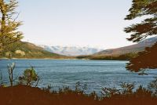
Tierra del Fuego ('Land of Fire') - island at the end of the world |
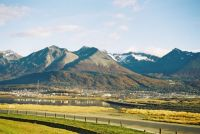
Mountains in Parque Nacional Tierra del Fuego |
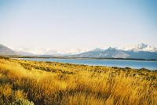
View across the Beagle Channel, Tierra del Fuego |
|
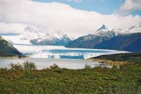
Perito Moreno glacier, an extension of the vast South Patagonian Ice Field |
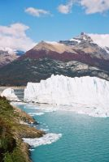
Perito Moreno glacier |
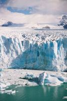
Perito Moreno glacier |
|
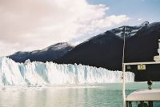
North face of the glacier (around 60m high) |
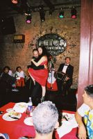
Tango Show, San Telmo, Buenos Aires (on Easter Sunday) |
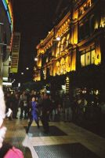
Street tango, Buenos Aires |
|
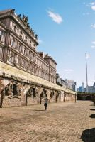
Presidential Palace from the old fort, Buenos Aires |
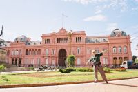
Presidential Palace (where Evita gave her speech from), Buenos Aires |
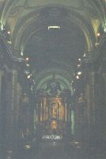
Cathedral, Buenos Aires |
|
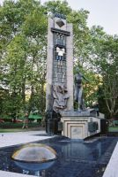
Evita's Memorial |
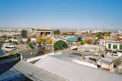
View from the top of an artist's house, La Boca (painters district), Buenos Aires |
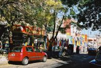
La Boca (full of colourful houses built by Italian immigrants), Buenos Aires |
|
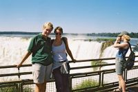
Iguazu Falls |
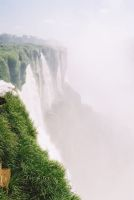
Iguazu Falls |
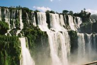
Iguazu Falls |
|
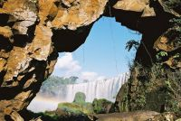
Iguazu Falls |
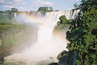
Iguazu Falls |
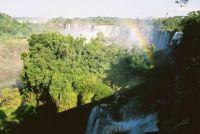
Iguazu Falls |
|
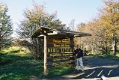
Caroline at the End of the Road, Tierra del Fuego |
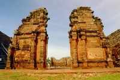
Jesuit ruins in San Ignacio |
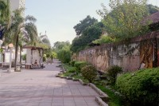
Mural along the wall, Corrientes (the day before the presidential elections) |
|
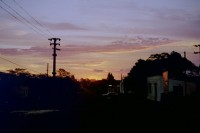
Sunset in Mercedes, stopping off point before we headed into the wetlands national park |
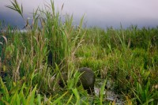
Capybara (overgrown guinea pig) hiding in the reeds |
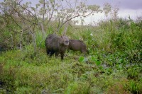
Capybara (these things can weigh up to 80kg!) |
|
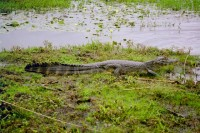
Our first sighting of a caiman (of the crocodile/alligator family) - fortunately they're not too big! |
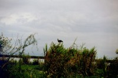
A noisy bird (didn't get the spanish name for it!) |
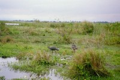
A pair of the noisy birds with 3 chicks (there were 6, but the caiman had quite a fancy for them) |
|
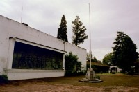
Casa de Independencia, where Argentina declared independence from Spain in the early 1800's, Tucuman |
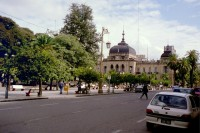
Plaza de Armas, Tucuman (every town has one of these, a town square with lots of trees and surrounded by imposing buildings) |
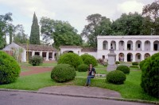
House of the owner of a large sugar mill on the outskirts of Tucuman |
|
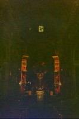
|
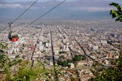
Salta from a cable car |
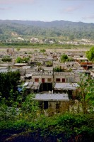
Looking out past a shanty town towards the "river", San Salvador de Jujuy |
|
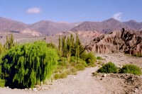
Looking across the valley from the pukara (fort) above Tilcara |
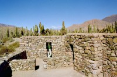
The beautifully reconstructed remains of the pukara (fort) built in pre-Inca times, surrounded by cactii |

View over the valley from higher up (we'd gone to see a 'spectacular' waterfall - unfortunately it was the dry season! Nice walk though) |
|
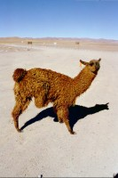
The friendly llama that greeted us at Argentine Immigation (he's scratching an itch in case you wondered) |